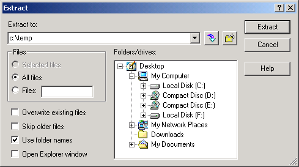
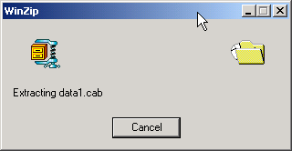
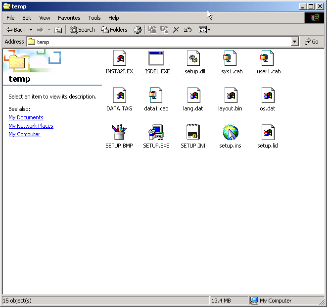

|
|
Manual |
The link provided will take you to a mirror site where you can download the
latest release of MySQL (3.23.55) for Windows.
Click on the appropriate mirror according to your location in the world.
Once the download is complete, you will have a ZIP file. This will need to be extracted to a temporary working directory. Once extracted, double click the Setup.exe file to begin the installation process. Here are sample extraction steps using the popular ZIP client WinZIP:




Next Page - Installing MySQL server
This document is part of the UltraScan Software
Documentation distribution.
Copyright © notice
The latest version of this document can always be found at:
Last modified on February 2, 2003.